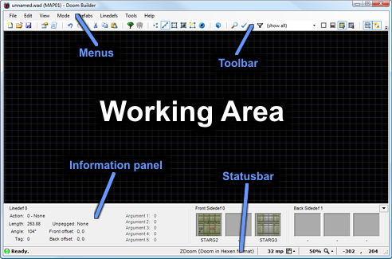

The main interface window consists of the following parts;

Menus
The menus are very straight-forward and you'll find most common features in the usual places. File related actions in the File menu, view related actions in the View menu and editing related actions in the Edit menu.
Toolbar
Your most needed actions and options are on the toolbar, right below the menu.
Information panel
When highlighting or targeting a specific element in the working area, a small summary about that element is displayed in this panel. You can minimize the information panel by clicking on the little arrow button on the right to maximize your working area.
Statusbar
Doom Builder shows you the current status in the statusbar. On the left is a small LED that turns green when Doom Builder is idle. When the LED turns yellow, it means Doom Builder is doing some background work. When the LED is red, then Doom Builder is busy performing an action. Right next to the status LED is a description of the current status. It also shows a result description and flashes the LED when performing and action.
On the right of the statusbar are grid size (in mappixels), the zoom percentage and the current mouse coordinates. You can click the buttons next to the grid size and the zoom percentage to bring up a related menu that allows you to change any of these settings.